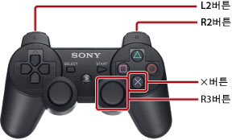

사용자 가이드의 사용 방법
이 사용자 가이드에서는 시스템 소프트웨어에 관한 조작 방법을 설명합니다. 하드웨어의 취급 및 사용상의 주의 사항 등에 대해서는 본체에 동봉된 사용설명서를 참조해 주십시오.
사용자 가이드를 보기 위한 권장 환경
다음 조건이 갖춰진 상태에서 이 가이드를 읽어 보는 것이 좋습니다.
- 사용하시는 브라우저에서 자바스크립트 기능이 무효화되어 있으면 사용자 가이드가 제대로 기능하지 않거나 표시되지 않는 경우가 있습니다. 자바스크립트를 활성화해 주십시오.
- PC의 웹 브라우저는 Microsoft Internet Explorer 6.0 이상을 사용하실 것을 권장합니다.
PS3™에서 사용자 가이드를 보기 위한 기본 조작
다음의 기본 조작으로 PS3™의  (인터넷 브라우저)에서 사용자 가이드를 볼 수 있습니다.
(인터넷 브라우저)에서 사용자 가이드를 볼 수 있습니다.
| 방향키 | 포인터를 링크로 이동합니다. |
|---|---|
 버튼 버튼 |
링크를 엽니다. |
| 오른쪽 스틱 | 임의의 방향으로 스크롤합니다. |
| L1 버튼 | 이전 페이지로 돌아갑니다. |
다음의 조작으로 화면 표시를 확대할 수 있습니다.

| R3 버튼(오른쪽 스틱) 누르기 | 표시를 확대/해제합니다. |
|---|---|
| 확대한 상태에서 L2 버튼/R2 버튼 누르기 | 표시를 확대/축소합니다. |
확대한 상태에서  버튼 누르기 버튼 누르기 |
표시 확대를 해제합니다. |
사용자 가이드의 버튼 설명
PS3™에서는 지역이나 제품에 따라 항목의 결정 및 취소에 사용되는 버튼이 다릅니다. 이 사용자 가이드의 서구권 언어 버전에서는 결정에 를, 취소에 를 사용하고, 그 외의 언어 버전에서는 결정에 를, 취소에 를 사용하고 있습니다.
사용자 가이드 인쇄 방법
PC를 사용하여 사용자 가이드를 인쇄할 수 있습니다. 다음 순서로 인쇄하면 여러 페이지를 한번에 인쇄할 수 있습니다.
1. |
Microsoft Windows Internet Explorer를 사용하여 이 가이드의 [매뉴얼 색인]을 표시합니다. |
|---|---|
2. |
Internet Explorer의 파일 메뉴에서 [인쇄]를 선택합니다. |
3. |
[옵션] 탭을 선택한 다음 [링크된 문서를 모두 인쇄] 확인란을 선택하여 가이드를 인쇄합니다. |